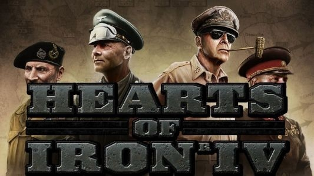
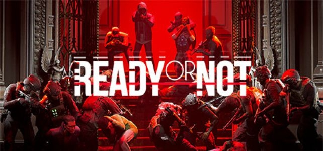

よくやるゲーム
Hearts of IronⅣ
第二次世界大戦を舞台にした戦略シミュレーション、プレイヤーは選択した国家の陸海空軍を操作し
- 大日本帝国で大東亜共栄圏を作り上げる
- 各国を王政復古させ、大怪獣反動帝国主義バトルロワイヤルを開催する
- ドイツで世界中で国家弁務官区を作り新たな秩序 "The New Order" を作る
- 共産アメリカで世界征服
等ができるとても自由度が高いゲームです。
HoI4 Steam販売ページReady or Not
SWATチームの指揮官として、犯罪現場を鎮圧するタクティカルシューティングゲーム。
プレイヤーは
- 容疑者を確保・無力化
- 民間人の確保
- 証拠品の回収
- 無警告射撃
- 確保済みの民間人や容疑者への発砲
- 気絶した民間人や容疑者への発砲
- 民間人の死亡
- 味方の隊員への発砲
- 味方の隊員の殺害